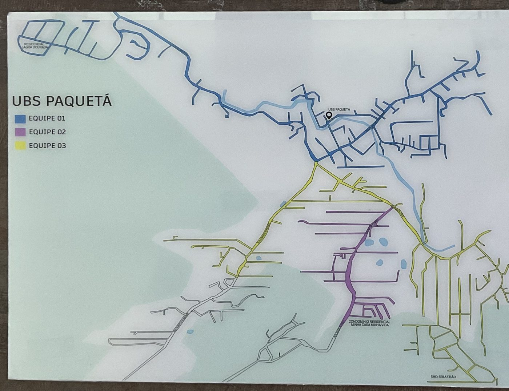

Avisos de hoje
Coisas que mudaram e você precisa saber antes de vir.
Avisos futuros
Ainda não vale hoje, mas já está programado.
Minha rua
Escreva o nome da sua rua para saber qual equipe atende você e em que horário.
O que você precisa?
Toque em “Ver os dias da semana” para saber quando cada setor atende.
Quem trabalha aqui
A equipe da unidade e o que cada pessoa faz.
Ver mapa das áreas de cada equipe

Passando mal? Precisa de ajuda agora?
Se a UBS estiver aberta, procure o Acolhimento para avaliação. Se estiver fechada ou for muito grave, procure um destes lugares.
Onde fica e telefones
Endereço
Telefone da UBS
Secretaria de Saúde
Localização
Outros telefones úteis
Carregando horários…